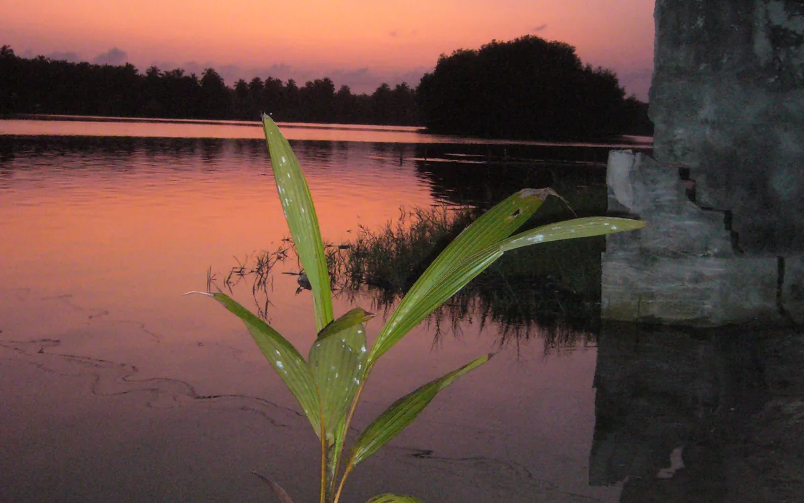

Premiers engagements environnementaux et associatifs
Des repères citoyens se structurent autour de l’environnement, de la sensibilisation et de la protection des espaces de vie.
ONG ivoirienne à vocation internationale
Une trajectoire citoyenne construite autour de la protection du littoral, de la structuration associative et d’une vocation ouverte aux enjeux côtiers au-delà des frontières.
Mémoire associative
Protégeons notre Littoral s’inscrit dans une histoire associative construite autour du littoral ivoirien, de l’environnement côtier, de l’océan, des lagunes, de la mobilisation citoyenne et de la transmission. Cette histoire s’appuie sur des repères institutionnels, des supports publics, des archives visuelles et des documents internes conservés avec soin.
Des repères citoyens se structurent autour de l’environnement, de la sensibilisation et de la protection des espaces de vie.
L’identité de l’ONG se précise autour des côtes ivoiriennes, des lagunes, de l’océan et des enjeux environnementaux associés.
La mémoire de l’ONG rassemble des traces de structuration, de participation et de contribution citoyenne.
Les archives documentaires orientent progressivement la réflexion vers les défis côtiers, marins, climatiques et ouest-africains.
Les supports publics et les canaux numériques renforcent la lisibilité institutionnelle de Protégeons notre Littoral.
Les programmes, la médiathèque, les ressources et l’Observatoire donnent un cadre public à cette mémoire associative.
Les documents institutionnels disponibles présentent Protégeons notre Littoral comme une initiative portée par des jeunes, étudiants et chercheurs concernés par les zones côtières, les eaux maritimes et les patrimoines naturels.
Les documents institutionnels présentent Protégeons notre Littoral comme une ONG ivoirienne constituée en 2016, avec une existence associative documentée.
Les éléments documentés évoquent une structuration associative et des organes internes. Les références juridiques détaillées ne sont pas publiées sur le site.
Les brochures, visuels et documents anciens constituent une base de mémoire pour documenter l’histoire de l’ONG et renforcer sa communication institutionnelle.
L’ONG consolide son identité publique, structure ses programmes et organise des formats d’action citoyenne compatibles avec sa mission.
L’ONG affirme une vocation internationale dans son positionnement, tout en gardant la publication centrée sur les informations confirmées et les contributions utiles au littoral.
Repères historiques
L’histoire de Protégeons notre Littoral s’inscrit dans une continuité d’engagements autour du littoral ivoirien, de l’environnement côtier, de l’océan, du climat, de la gouvernance maritime et de la mobilisation citoyenne. Ces repères seront progressivement enrichis à partir d’archives publiques, de supports autorisés et de documents sélectionnés.
Premiers repères autour de l’environnement, de la société civile, de la documentation, de la formation associative et de la mobilisation citoyenne.
Période structurante autour des enjeux du littoral ivoirien, de l’environnement côtier, de l’eau, de l’océan, des lagunes et de la gouvernance environnementale.
Repères liés aux échanges sur les défis côtiers, maritimes et environnementaux en Afrique de l’Ouest.
Repères liés aux enjeux climat, jeunesse, océan et mobilisation internationale, à valoriser progressivement avec les supports appropriés.
Nouvelle étape de développement institutionnel avec la structuration du site, des programmes, des ressources, de l’Observatoire et des formes de contribution.
Les anciens supports de Protégeons notre Littoral témoignent d’une volonté de sensibiliser, former, documenter et mobiliser autour du littoral ivoirien et africain. Ils constituent une mémoire institutionnelle à préserver, tout en distinguant les documents publiables des archives internes.
Voir le programme Mémoire du LittoralLes supports historiques de l’ONG permettent de retracer l’évolution de ses messages, de son identité et de son engagement autour du littoral ivoirien et africain. Ils renforcent la mémoire publique de Protégeons notre Littoral sans exposer les documents internes ou nominatifs.
Voir les archives historiques
Le site valorise uniquement les éléments compatibles avec une publication publique : aucun contact personnel, aucune liste nominative, aucune signature et aucune image de personne identifiable sans autorisation.
Voir les critères de publicationDernière mise à jour : juin 2026